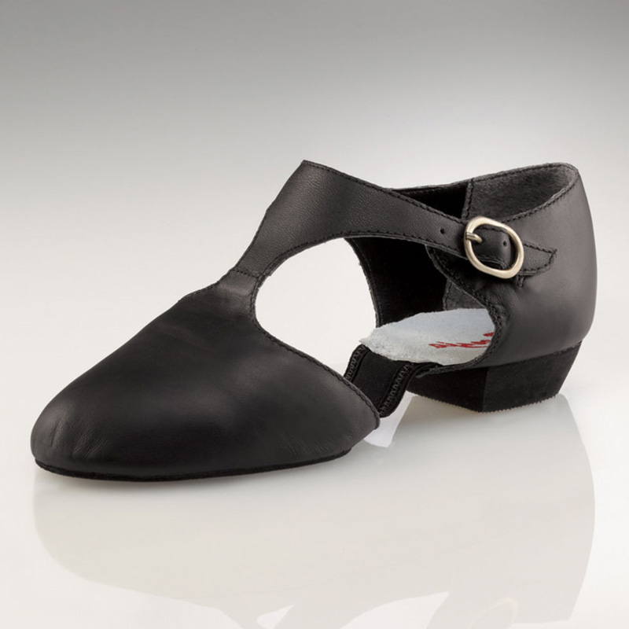
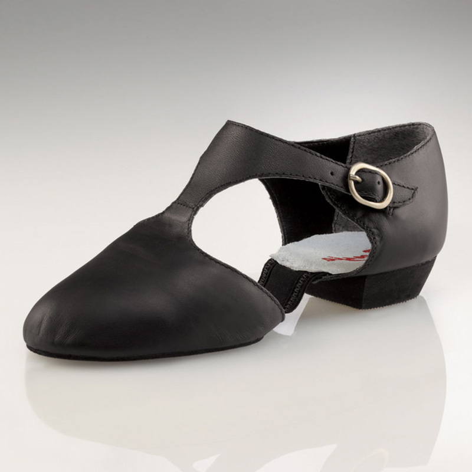

JAZZ
Jazz dance is the performance dance technique and style that emerged in America in the early twentieth century. Jazz dance may refer to vernacular jazz or Broadway or theatrical jazz. Both genres build on the African American vernacular style of dancing that emerged with jazz music. Vernacular jazz dance includes ragtime dances, Charleston, Lindy hop, and mambo. Popular vernacular jazz dance performers include The Whitman Sisters, Florence Mills, Ethel Waters, Al & Leon, Frankie Manning, Norma Miller, Dawn Hampton, and Katherine Dunham. Theatrical jazz dance performed on concert stage was popularized by Jack Cole, Bob Fosse, Eugene Louis Faccuito, and Gus Giordano. The term "jazz dance" has been used in ways that have little or nothing to do with jazz music. Since the 1940s, Hollywood movies and Broadway shows have used the term to describe the choreography of Bob Fosse and Jerome Robbins. In the 1990s, colleges and universities applied to the term to classes offered by physical education departments in which students dance to various forms of pop music, rarely jazz.
In jazz choreography, there are often many jumps and turns. Some of the most common dance turns includes pirouettes, fouttes, a la second turns/pump turns, coupe turns, and sail turns. Examples of common jumps include jetes, jumps in second, switch split, tilt jumps, russians, firebirds, and butterfly jumps. Many jazz routines also feature the dancers leg flexibility in leg extensions, needles, hairpins, Y-stands and bow and arrows. The shoes worn for jazz dances are either slip-on jazz shoes (left image), and pedinis (right image). Occasionally, one might also wear dance paws (see "Contemporary").
 

This page is hosted by github and has been validated.